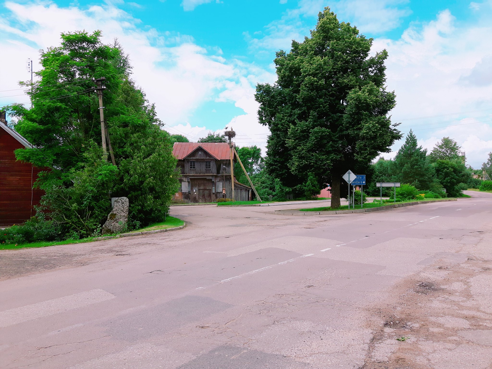
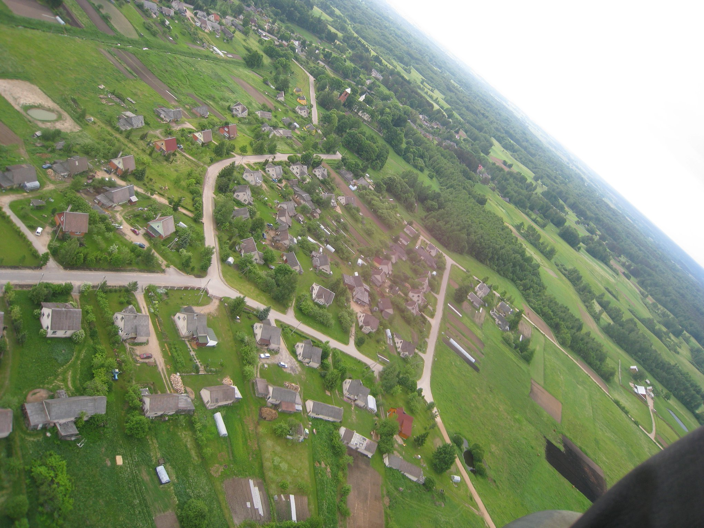
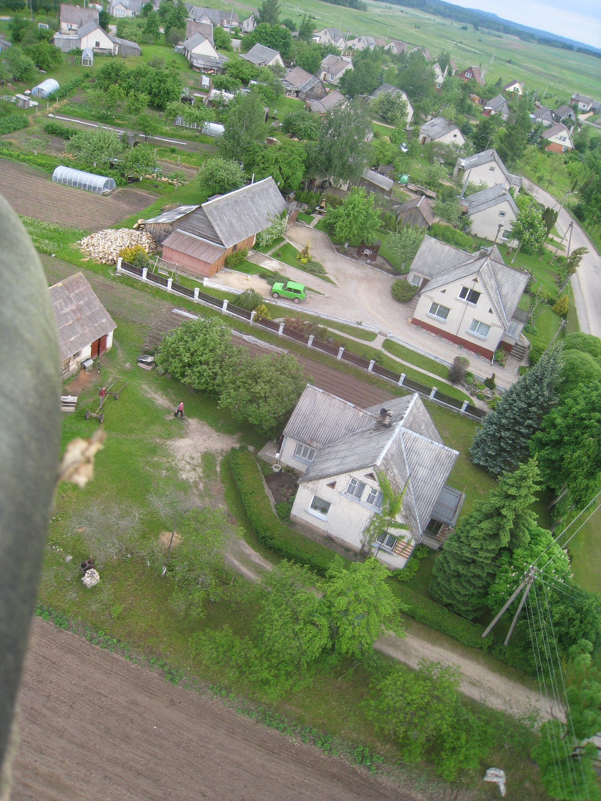
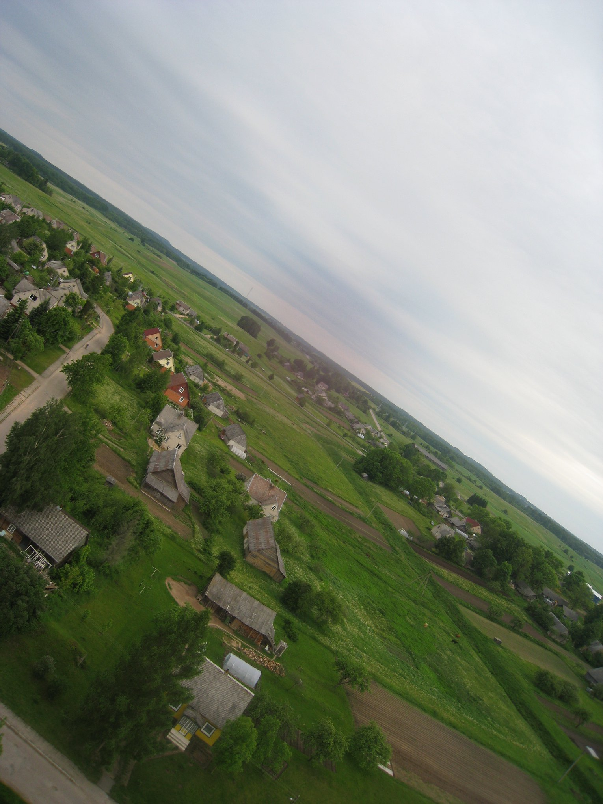
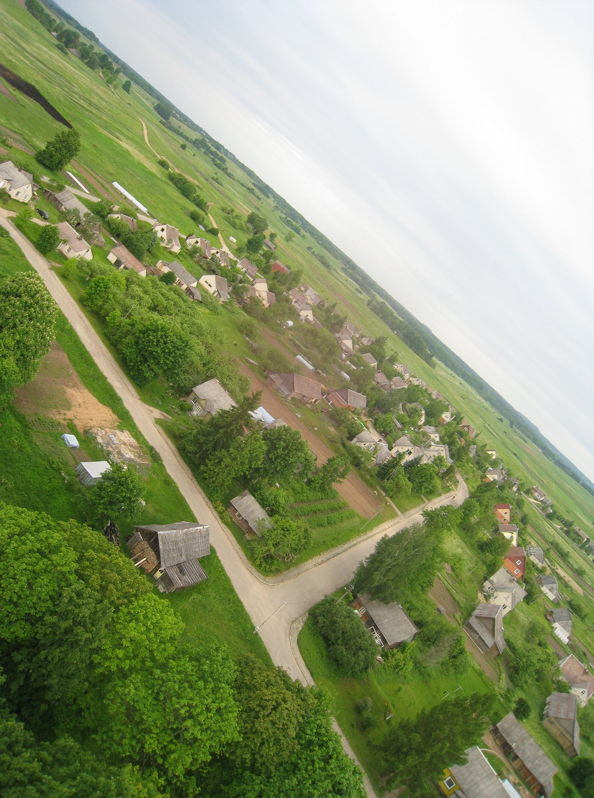
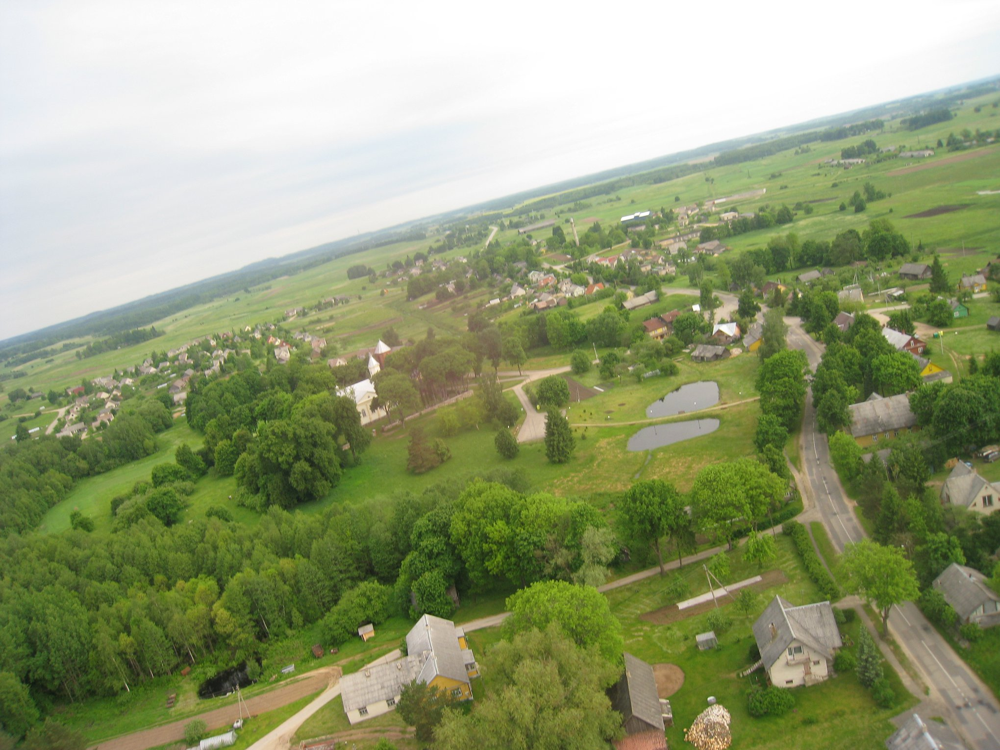

Informacija apie miestelį






Skiemonys – miestelis Anykščių rajono savivaldybėje, prie kelio 119 Molėtai–Anykščiai , 2 km piečiau kelio A6 Kaunas–Zarasai–Daugpilis . Seniūnijos ir seniūnaitijos centras. Stovi medinė Skiemonių Švč. Mergelės Marijos bažnyčia (pastatyta 1884 m.), veikia paštas (LT-29012), biblioteka (nuo 1941 m.), Skiemonių pagrindinė mokykla. Skiemonyse yra susikūrusios dvi nevyriausybinės organizacijos: Skiemonių kaimo bendruomenė ir Anykščių rajono Moterų klubo Skiemonių skyrius.
Gyventojų statistika
| Metai | Gyventojų skaičius |
|---|---|
| 2021 | 26 |
| 1900 | 450 |
Administracinis-teritorinis pavaldumas
| Laikotarpis | Miestelio dalis | Administracinis pavaldumas |
|---|---|---|
| XIX a. – XX a. pradžia | Kurklių valsčius | Vilkmergės valsčius |
| XX a. pradžia | Alantos valsčius | |
| 1918–1947 m. | Skiemonių valsčiaus centras | Utenos apskritis |
| 1947–1950 m. | Anykščių apskritis | |
| 1950–1995 m. | Skiemonių apylinkės centras | Anykščių rajonas |
| 1995– | Skiemonių seniūnijos centras | Anykščio rajono savivaldybė |